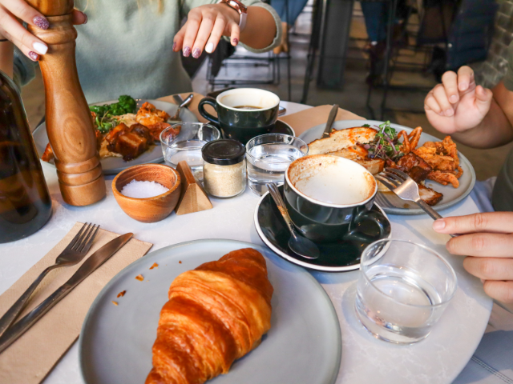

Dioniso cafe - pasteleria
Av Constitucion 7053
Mar Del Plata
Abierto de Lun-Sab de 8 a 20hs
Dom de 8 a 13hs

CarSer
1ro de Mayo 2620
Mar Del Plata
Abierto de Lun-Sab 7:30 a 19:30hs
Dom de 7:30 a 13hs